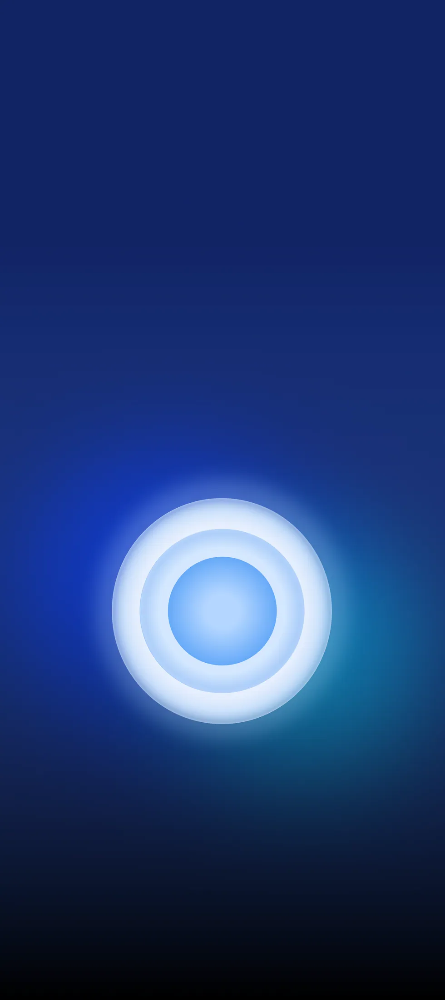
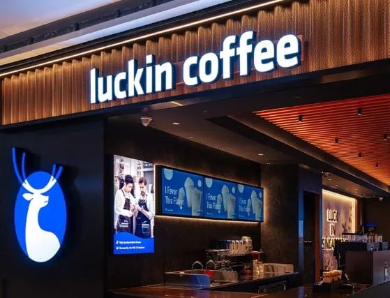
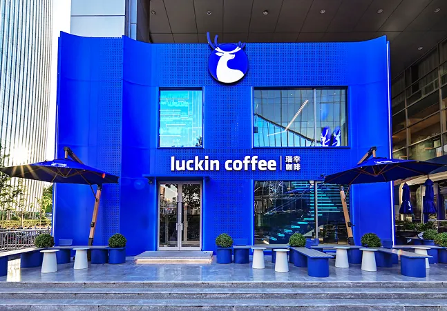
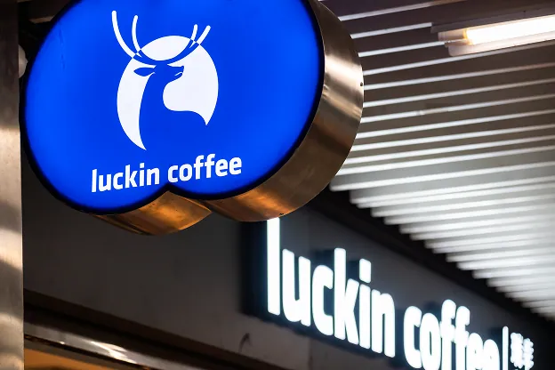
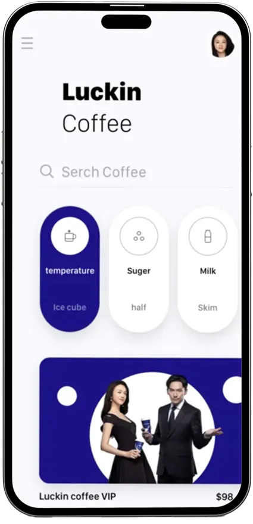

BRAND MISSION
"create lucky moments and inspire
a desire for a better life."
Luckin Coffee is the coffee brand
with the largest number of stores in China.



Smart Retail, Smarter Coffee
Driven by Big Data

The Intersection of Digital
Innovation and Coffee Culture
BRAND VISION
"to build a world-class coffee brand and become
a part of everyone's daily life."
"Customer First, Integrity, Quality Excellence,
Continuous Innovation, Self-Criticism, and Mutual Trust & Win-Win,"